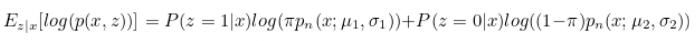
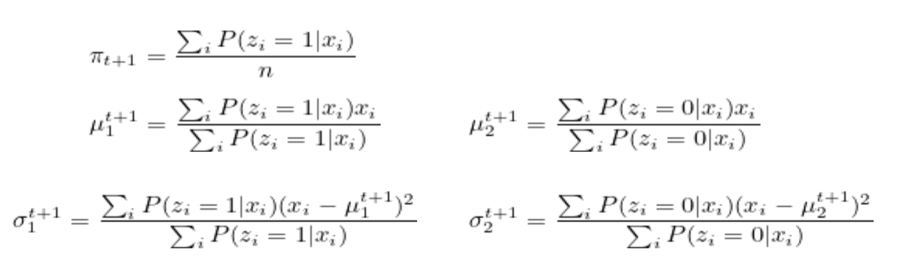

Firstly, we have k Gaussian models, denoted as N(μ1,σ12),N(μ2,σ22),...,N(μk,σk2).
According to certain proportions, we sampled some data from the Gaussian function N(μj,σj2) with proportions ϕj.
Empirically, it can be observed that ∑j=1kϕj=1, which means the sum of all proportions is 1.
p(z(i)=j)=ϕj represents the probability of being in cluster z=j. If it is a hard assignment, it is represented by I(z(i)=j). If z(i)=j in this cluster, the probability is 1; otherwise, it is 0 if not in this cluster.
p(x(i)∣z(i)=j)=pnorm(x(i);μj,σj) represents the probability of obtaining x from Gaussian distribution j, such as:
Each x(i) corresponds to k zj(i).
Basic parameters and distributions
input: $$ {x^{(1)}, …, x^{(n)}} $$
latent variable:
{z(1),...,z(n)},z(i)=(z(i)=1,z(i)=2,...,z(i)=k)
In other words, each z(i) corresponds to an x(i). z(i) follows a multinomial distribution and can be divided into different z belonging to different k’s. By belonging to different z of k, larger z can be pieced together to obtain x.
joint distribution
p(x(i),z(i))=p(x(i)∣z(i))p(z(i))
Where z(i)∼Multinomial(ϕ), a multinomial distribution where ϕj≥0, and ∑j=1kϕj=1.
x(i)∣z(i)=j∼N(μj,Σj)
z(i) indicates which of the k Gaussians each x(i) comes from.
p(z) represents the probability of choosing cluster z, which is the density of the mixture model.
p(z(i)=j) represents the probability in cluster z=j.
Here, i denotes the index of the data, x represents the data itself, j denotes the index of the cluster, and z represents the cluster.
The parameter ϕj provides p(z(i)=j), x(i)∣z(i)=j∼N(μj,Σj), meaning that x|z follows a certain Gaussian distribution, where N() represents the Gaussian distribution.
To address (1), we introduce z, thereby breaking down the probability into two parts multiplied together, resulting in (2).
Wherein the ; on the left side represents the variable and on the right side represents the parameter, while , denotes parallelism. In x∣z;μ,Σ, the right side of | represents the overall range (i.e., the range where z=j), and the left side, x, signifies the probability of x within those specified ranges.
If z(i) is known, that is, if we know which Gaussian distribution zi comes from—put differently, when j is fixed—the equation can be simplified to:
The maximum function (3) is obtained by taking partial derivatives and setting them to zero, resulting in the calculation of the result: (at this point, j is fixed)
From the above figure, it can be observed that z(i) can be considered as the role of a class label. Therefore, once z(i) is known, everything else can be derived. Thus, we use the Expectation-Maximization (EM) method to determine z(i).
EM (Expectation-Maximization) algorithm for density estimation
（E-Step） Gaussingz(i)，cluster assignment
For each i,j, set
wj(i):=p(z(i)=j∣x(i);ϕ,μ,Σ)
This ωj(i) represents our guess for z(i). Because we are trying to determine z, it’s placed on the left side of |.
p(x(i)∣z(i)=j;μ,Σ) comes from the density of the Gaussian distribution with mean μj and covariance Σj. It represents the probability of obtaining x from the model if x(i) comes from Gaussian distribution j.
p(z(i)=j;ϕ)=ϕj represents the probability of coming from Gaussian model j.
(M-Step) Update the model’s parameters based on the guess (Maximum Likelihood Estimation - MLE) — soft assignment.
Update the parameters:
Where σ2→0, the original function simplifies to k-means.
From a probabilistic perspective, a Gaussian function approaches an impulse function as σ2 approaches zero. Only positions near the center have significant values; the rest become very small. Thus, for a specific Gaussian distribution, the probability is high, while for others, it is very low. Therefore, concerning the values of w, according to the Bayes’ formula, this data will have high values only within a specific Gaussian distribution, whereas the others tend towards zero.
From a clustering perspective, when sigma approaches zero, it means the boundaries of the ellipsoidal clusters in GMM become circular in k-means (or in other words, ellipsoids become spherical).
Advanced methods in K-means
Instead of using hard cluster assignment c(i), we’re using soft assignments ωj(i).
In the code, w is an m x k matrix containing the probabilities of xi belonging to Gaussian distribution j. If we want to convert this into hard clustering, we iterate through the probabilities of xi across all k Gaussian distributions and find the Gaussian distribution with the highest probability. Then, we assign xi to that Gaussian distribution, setting all other probabilities to 0. Consequently, the matrix is reduced to an m x 1 vector.
GMM Solving
GMM can be solved using EM or by minimizing the loss function.
The probability of both z and x occurring simultaneously equals the probability of z occurring multiplied by the probability of x occurring, and then summed over all possible scenarios.
The expectation of log(p(x,z)) is the probability multiplied by whether it happens, i.e., p(z=1∣x).


Announcement：This blog content serves as class notes and is solely for sharing purposes. Some images and content are sourced from textbooks, teacher presentations, and the internet. If there are any copyright infringements, please contact aursus.blog@gmail.com for removal.